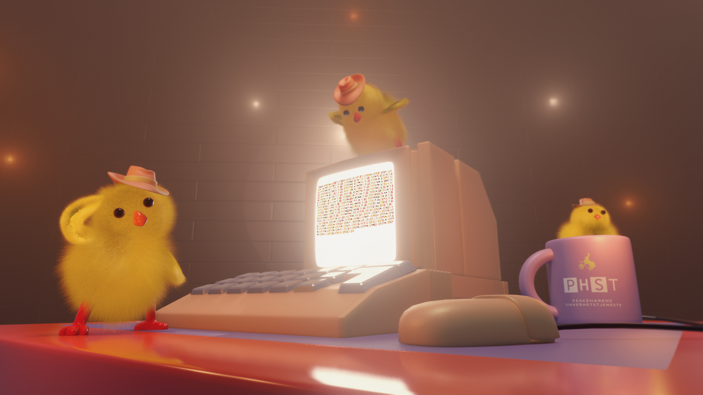
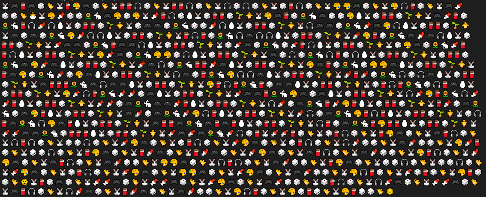
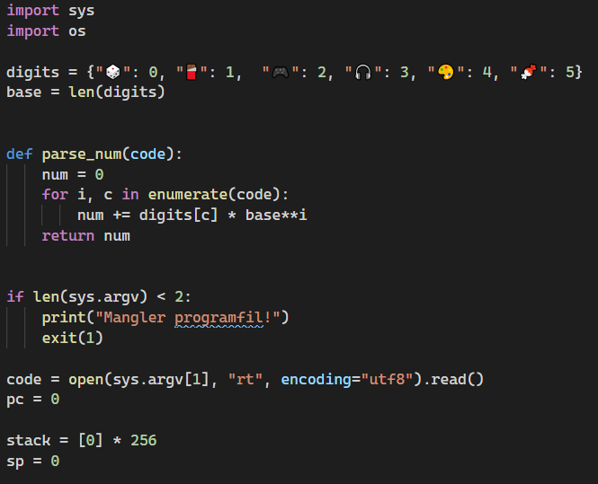
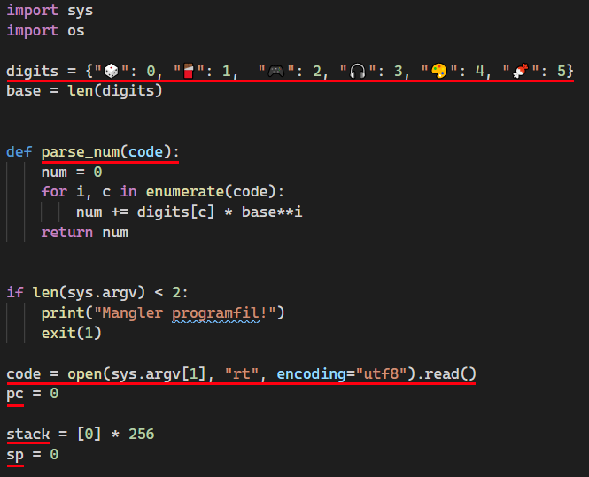
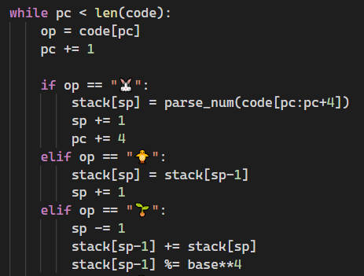
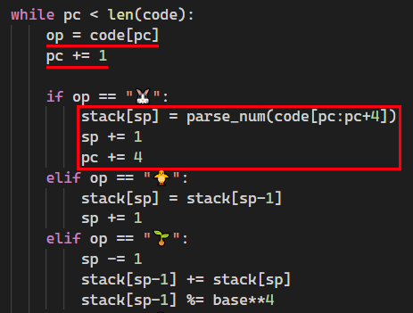

henrikwm @ bekk
Påskenøttknekking med emojier 🐇
Hvem er jeg?
I ❤️ CTF-er
"Andre påskedag"
Vi har fått 3 filer
{kind=link}
Analyse
paskekyllingbetjenter.png
Analyse med file:
$ file paskekyllingbetjenter.png
paskekyllingbetjenter.png: PNG image data, 1920 x 1080, \
8-bit/color RGBA, non-interlaced
Analyse med strings:
$ strings paskekyllingbetjenter.png
...
PQ8I9C]
=g+m*o)
y|u?
Io>rw
K_rA
l]@?
%@X@
rX#s
2hf
...
Steganografi-analyse: Stegsolve.jar
$ java -jar stegsolve.jar

underfundig
merkelig.py
Vi kjører programmet:
$ python merkelig.py underfundig
Passord: 123456
Ikke riktig :(
🥺
Vi må finne passordet!
merkelig.py
merkelig.py
merkelig.py
merkelig.py
Stack-basert virtuell maskin
Fra Wikipedia:
A "stack machine" is a computer that uses a last-in, first-out stack to hold short-lived temporary values. Most of its instructions assume that operands will be from the stack, and results placed in the stack.
Hva kjennetegner en stack-basert virtuell maskin?
- stack: register med programmets data
- sp: stack pointer peker på minneadressen som inneholder neste posisjon (toppen) av stacken
- pc: program counter (programteller) vet i hvilken minneadresse den finner neste instruks/data
- op: operand (pop, push, jmp, xor osv.)
Alle operand-emojiene underfundig inneholder:
🐰🐥🌱🌻🐇🥚🐤🐣🌞
er maskininstruksjoner!
(...)
elif op == "🐥": # 1. kylling tilsvarer assembly-instruksjonen "PUSH"
stack[sp] = stack[sp-1]
sp += 1
elif op == "🌱": # 2. frø tilsvarer assembly-instruksjonen "ADD"
sp -= 1
stack[sp-1] += stack[sp]
stack[sp-1] %= base**4
elif op == "🌻": # 3. solsikke tilsvarer assembly-instruksjonen "SUB"
sp -= 1
stack[sp-1] -= stack[sp]
stack[sp-1] %= base**4
elif op == "🐇": # 4. kanin tilsvarer assembly-instruksjonen "JMP"
sp -= 1
if stack[sp] != 0:
pc += parse_num(code[pc:pc+4])
else:
pc += 4
(...)
Operander og maskininstrukser i den virtuelle maskinen:
| Emoji-operand | Tilsvarer instruksjon |
|---|---|
| 🐇 | jmp |
| 🐥 | push |
| 🌻 | pop_sub |
| 🌱 | pop_add |
| 🥚 | xor (⊕) |
| ... | ... |
underfundig er et program som er kompilert til emojier
kan vi dekompilere programmet tilbake til menneskelesbar kildekode?
Dekompilering
For å lage et dekompileringsprogram må vi forstå underfundig litt bedre
Finner vi et mønster i emojiene?
🐰🎮🍫🎮🎲🐤🐰🍫🎨🎮🎲🐤🐰🍫🍫🎧🎲🐤
-
🐰🐥🌱🌻🐇🥚🐤🐣🌞
=
🎮🍫🎮🎲🍫🎨🎮🎲🍫🍫🎧🎲
Vi vet hva som er operander:
🐰🐥🌱🌻🐇🥚🐤🐣🌞
I merkelig.py så vi:
digits = {"🎲": 0, "🍫": 1, "🎮": 2, "🎧": 3, "🎨": 4, "🍬": 5}
Så vi vet at disse er data:
🎲🍫🎮🎧🎨🍬
Vi lager et nytt Python-program underfundig_dekompilering.py:
code = open(sys.argv[1], "rt", encoding="utf-8").read()
write_decoded_commands(code) # code=innholdet i underfundig-filen
Kjører programmet:
$ python underfundig_dekompilering.py underfundig
som lager en ny fil: underfundig_dekompilering_output
I merkelig.py så vi:
if op == "🐰":
stack[sp] = parse_num(code[pc:pc+4]) # les inn 4 emojier
sp += 1
pc += 4
🐰 leser 4 emojier av gangen og omgjør til et tall
Data-emojiene ser ut til å være bokstaver!
| 🎮🍫🎮🎲 | 🍫🎨🎮🎲 | 🍫🍫🎧🎲 | 🍫🍫🎧🎲 | |
| ASCII-tallverdi | 80 | 97 | 115 | 115 |
| Bokstav | P | a | s | s |
Vi lager et nytt program løsning.py som henter ut alle bokstaver i underfundig:
text = extract_text(underfundig_content)
print(text)
og kjører programmet:
$ python løsning.py underfundig
Passord: "w*4*D*T*W*J*7*A*Y*f*`*j*n***}*4*\x9d*ç*¿*Ą*Ŏ*Ŋ*Ŧ*ı*Ɖ*Ǔ*Ǒ*Ǐ*ǐ*LJ*Ǧ*ǜ*ƹ*ț*ɵGratulerer! Flagget vet du allerede :)\nIkke riktig :(\n
w*4*D*T*W*J*7*A*Y*f*`*j*n***}*4*
\x9d*ç*¿*Ą*Ŏ*Ŋ*Ŧ*ı*Ɖ*Ǔ*Ǒ*Ǐ*ǐ*LJ*Ǧ*ǜ*ƹ*ț*ɵ
🕵️♀️🕵️♂️
Dekryptering
Målet vårt nå er å dekryptere chifferteksten til noe som ligner flaggformatet PHST{...}
Vi endrer litt på merkelig.py:
skriv ut hele stacken
for hver operand-instruksjon som blir utført
$ python merkelig.py underfundig
Passord: tulleinput
(...) t , u , l , l , e , i , n , p , u , t
🐣:116,117,108,108,101,105,110,112,117,116,(10) (...)
🐣:116,117,108,108,101,105,110,112,117,116,10,(0) (...)
🐰:116,117,108,108,101,105,110,112,117,116,10,(34) (...)
🐰:116,117,108,108,101,105,110,112,117,116,10,34,(0) (...)
🌻:116,117,108,108,101,105,110,112,117,116,10,(34) (...)
🌻:116,117,108,108,101,105,110,112,117,116,-24,(34) (...)
🌻:116,117,108,108,101,105,110,112,117,116,1272,(34) (...)
🐇:116,117,108,108,101,105,110,112,117,116,(1272),34 (...)
🐰:116,117,108,108,101,105,110,112,117,116,(73),34 (...)
(...)
tulleinput gir et negativt tallverdi på stacken som gjør at programmet alltid hopper til "Ikke riktig :("
Etter mange forsøk ulike passord med ulike lengder, og observasjon av forandringer i stacken...
Hvis passordet er 34 tegn langt...
Passord tulleinput123456789123456789123456 gir:
(...) 9, 1, 2, 3, 4, 5, 6, 7, 8, 9, 1, 2, 3, 4, 5, 6
🌻:(...) 57,49,50,51,52,53,54,55,56,57,49,50,51,52,53,54,0,(34) (...)
🐇:(...) 57,49,50,51,52,53,54,55,56,57,49,50,51,52,53,54,(0),34 (...)
🐰:(...) 57,49,50,51,52,53,54,55,56,57,49,50,51,52,53,54,(119),34 (...)
🐰:(...) 57,49,50,51,52,53,54,55,56,57,49,50,51,52,53,54,119,(34) (...)
🥚:(...) 57,49,50,51,52,53,54,55,56,57,49,50,51,52,53,54,(119),34 (...)
🥚:(...) 57,49,50,51,52,53,54,55,56,57,49,50,51,52,53,65,(119),34 (...)
🐰:(...) 57,49,50,51,52,53,54,55,56,57,49,50,51,52,53,65,(42),34 (...)
🐰:(...) 57,49,50,51,52,53,54,55,56,57,49,50,51,52,53,65,42,(34) (...)
(...)
Programmet kjørte litt lenger nå, vi har kommet til 🥚 (⊕)
ASCII-tallet 34 er tegnet "
I teksten vi fant i underfundig:
Passord: "w*4*D*T*W(...)
...finner vi tegnet
"
Vi har funnet programmets konstant for passordlengde! 😁
Passord tulleinput123456789123456789123456:
(...) 9, 1, 2, 3, 4, 5, 6, 7, 8, 9, 1, 2, 3, 4, 5, 6
🌻:(...) 57,49,50,51,52,53,54,55,56,57,49,50,51,52,53,54,0,(34) (...)
🐇:(...) 57,49,50,51,52,53,54,55,56,57,49,50,51,52,53,54,(0),34 (...)
🐰:(...) 57,49,50,51,52,53,54,55,56,57,49,50,51,52,53,54,(119),34 (...)
🐰:(...) 57,49,50,51,52,53,54,55,56,57,49,50,51,52,53,54,119,(34) (...)
🥚:(...) 57,49,50,51,52,53,54,55,56,57,49,50,51,52,53,54,(119),34 (...)
🥚:(...) 57,49,50,51,52,53,54,55,56,57,49,50,51,52,53,65,(119),34 (...)
🐰:(...) 57,49,50,51,52,53,54,55,56,57,49,50,51,52,53,65,(42),34 (...)
🐰:(...) 57,49,50,51,52,53,54,55,56,57,49,50,51,52,53,65,42,(34) (...)
(...)
Hvis gjeldende stack-verdi er "0" når 🐇 operanden kjøres, går den videre til XOR-operanden
119 ⊕ 54 = 65
I merkelig.py hopper 🐇 alltid videre til feilmeldingsteksten hvis gjeldende verdi på stacken er forskjellig fra 0:
elif op == "🐇":
sp -= 1
if stack[sp] != 0: # skal kaninen hoppe til ny instruks eller ikke?
pc += parse_num(code[pc:pc+4]) # hopp til ny instruks (feilmelding)
else:
pc += 4 # programmet går videre til neste instruks
Får vi gjeldende stack-verdi til å være 0 så kjører programmet videre til neste instruks istedet
Ved å analysere stacken nærmere, kan vi regne oss fram til hva som skal til for at 🐇 operanden får 0 som gjeldende stack-verdi?
🥚:(...) 53,54,(119),34 (...) # 4. Hvis z er 10, så må 119 XOR 10 = 125 = }
🥚:(...) 53,z,(119),34 (...)
🐰:(...) 53,z,(42),34 (...)
🐰:(...) 53,z,42,(34) (...)
🌱:(...) 53,z,(42),34 (...) # 3. Her må z være 10, fordi 10 + 42 må bli 52
🌱:(...) 53,y,(42),34 (...)
🌱:(...) 53,y,(42),34 (...)
🐥:(...) 53,107,(y),34 (...)
🐥:(...) 53,107,y,(34) (...)
🐰:(...) 53,107,y,(52) (...)
🐰:(...) 53,107,y,52,(0) (...)
🌻:(...) 53,107,y,(52) (...) # 2. Her må y være 52, fordi 52 - 52 må bli 0
🌻:(...) 53,107,x,(52) (...)
🌻:(...) 53,107,x,(52) (...)
🐇:(...) 53,107,(x),52 (...) # 1. x skal være 0
119 ⊕ (52-42) = 125, dvs. ASCII-tegnet } 😎
Algoritmen
kryptert tegn XOR (n+2 - n+1) = dekryptert tegn
w*4*D*T*W*J*7*A*Y*f*`*j (...)
w XOR (4-*)
...med ASCII-tallverdier:
119 XOR (52-42) =
125
}
w*4*D*T*W*J*7*A*Y*f*`*j (...)
4 XOR (D-*)
...med ASCII-tallverdier:
52 XOR (68-42) =
46
.
Vi håndregner oss fram til vi har et par bokstaver i passordet:
}.nywG
🤔
Vi utvider løsning.py med ny funksjon som bruker algoritmen vår til å dekryptere resten av chifferteksten
Lager en decipher()-funksjon for å dekryptere chifferteksten i løsning.py:
deciphered_cipher_raw = decipher(text) # text="Passord: "w*4*D*T*W (...)"
print(deciphered_cipher_raw)
og kjører programmet:
$ python løsning.py underfundig
}.nywG neP .nywG re nvan ttiM{TSHP
😲
Vi snur om på rekkefølgen på den dechiffrerte teksten i løsning.py:
deciphered_cipher = deciphered_cipher_raw[::-1]
print(deciphered_cipher)
og kjører programmet igjen:
$ python løsning.py underfundig
PHST{Mitt navn er Gwyn. Pen Gwyn.}

Vi kjører merkelig.py igjen:
$ python merkelig.py underfundig
Passord: PHST{Mitt navn er Gwyn. Pen Gwyn.}
Gratulerer! Flagget vet du allerede :)
😎